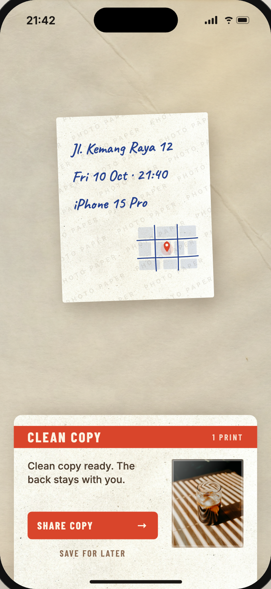
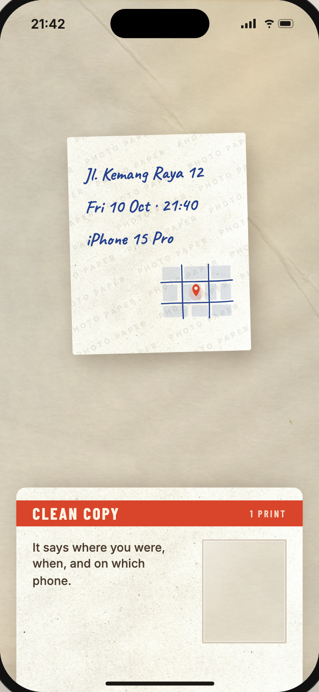
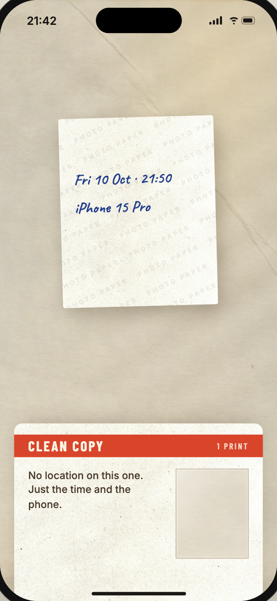
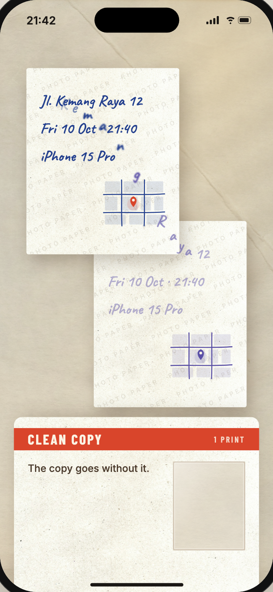
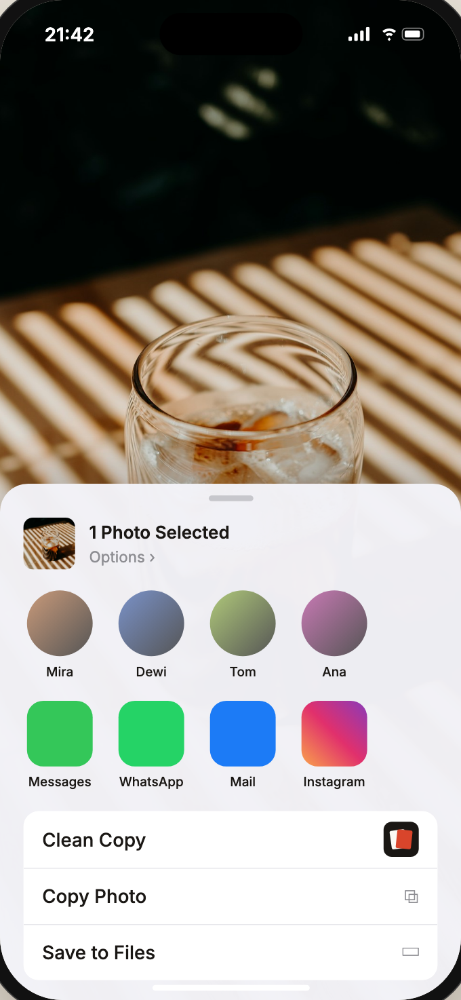
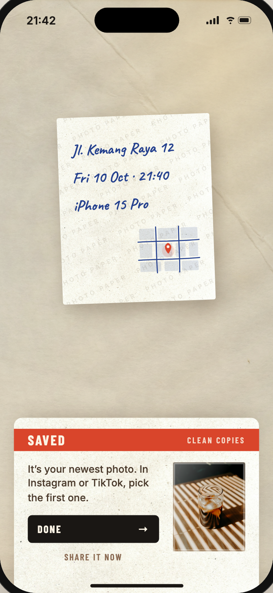
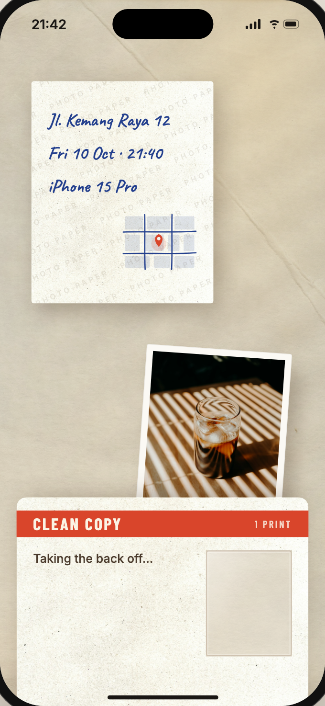
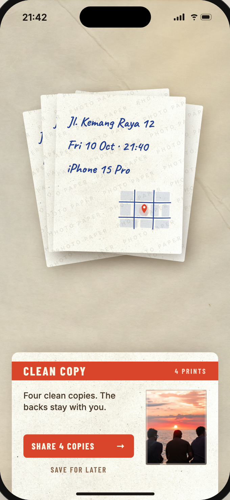
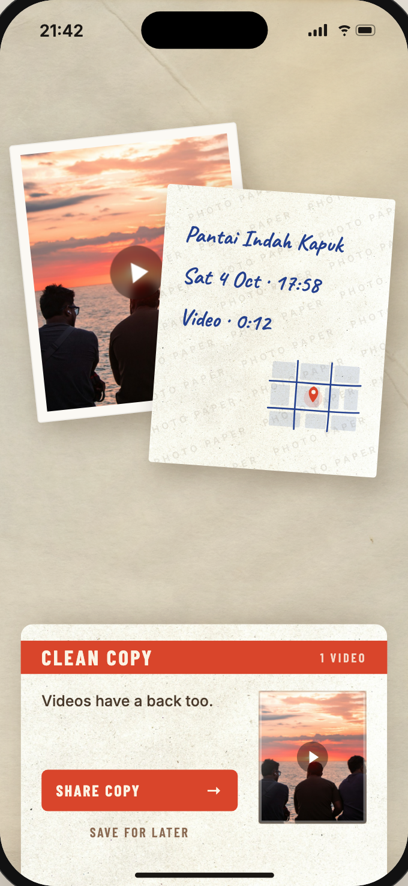
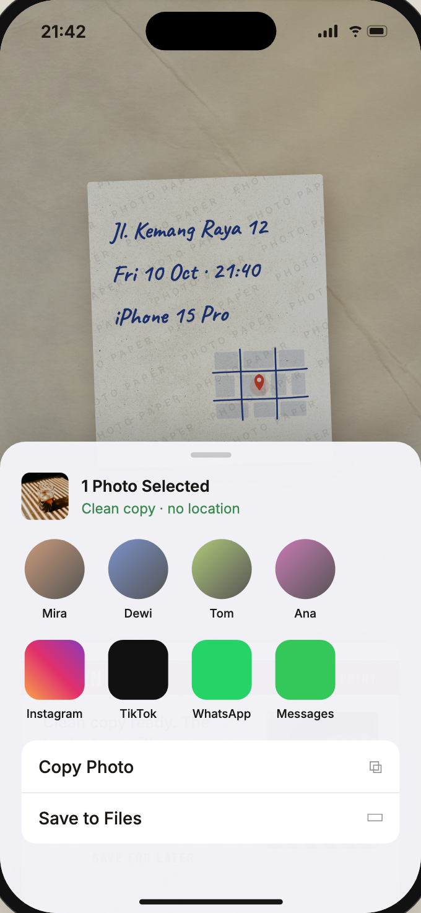

The front is for everyone.
The back is just for you.
BERSIH keeps the memory on your original and sends out a clean copy with the location, time and phone details removed.

The words go home
before the photo leaves.
A photo turns over like a print
The front is the image. The back is where the private details were written.

Where, when, and on which phone
Location, date, time, device, camera and software details are shown in plain language.


The words go home
A clean reprint slides out. The private words lift off the copy and settle back onto the original.

Clean where she already shares
Pick Clean Copy from the share sheet, then send the copy to the app she was already using.

Nothing is lost from her memory
Her library keeps the photo with its back intact. Only the copy has a blank back.


Two seconds
Once she knows the move, cleaning adds only a few seconds to a normal share.

One clean action for the media she posts
A single photo, several photos, or a video can leave with a blank back.



Questions, answered
What is on the back of a photo?
The hidden file details: often where the photo was taken, the date and time, the phone and camera, and the software that touched it.
Does BERSIH delete my memory?
No. The original stays as it is. BERSIH creates a clean copy to share and leaves your own photo alone.
Does it remove AI watermarks?
Not in v1. The first version is focused on metadata: location, time, date, phone and camera details for photos and videos.
Are photos uploaded?
No. The cleaning is designed to happen on your iPhone, inside the share flow.
For the moment before posting
Memory stays
Your original keeps its back. The shared copy does not.
No new habit
It lives where she already shares: the iOS share sheet.
On device
No account and no upload path for the media being cleaned.
Post the front. Keep the back.
Join the waitlist for the first BERSIH TestFlight.